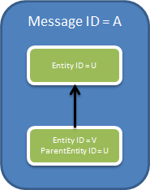
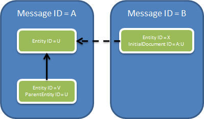

Модель данных¶
Диадок предназначен для обеспечения юридически значимого документооборота между организациями. Соответственно, основными задачами Диадока являются:
маршрутизация документов между организациями и/или подразделениями организаций;
формирование и хранение цепочек документооборота (документ формируется, затем подписывается одной стороной, передается на подпись второй стороне, подписывается второй стороной, и т.п.);
Единицей маршрутизации в Диадоке являются Ящики (Box).
То есть когда один пользователь системы хочет начать документооборот со своим контрагентом, он формирует цепочку документооборота (сообщение из документа и подписи к нему) в своем ящике (ящик отправителя), а система выполняет доставку документа контрагенту путем формирования соответствующей цепочки документооборота в ящике контрагента (ящике получателя).
Этот процесс в некотором смысле аналогичен доставке писем через электронную почту с той разницей, что реально документы никуда не пересылаются, а в ящиках отправителя и получателя лишь формируются записи, позволяющие добраться до соответствующих документов.
Каждый ящик в Диадоке относится к некоторой организации (юридическое лицо или индивидуальный предприниматель), которая представляется в Диадоке в виде единственной сущности типа Организация (Organization).
Ящики в системе закрепляются за организациями таким образом, что каждый ящик принадлежит одной и только одной организации. За счет этого, например, обмен бухгалтерскими документами и обмен договорами с одной компанией могут замыкаться на различные отделы и различных людей внутри этой компании, так что соответствующие бизнес-процессы будут автоматизироваться независимо.
Пользователи Диадока могут аутентифицироваться в системе как по паре логин/пароль, так и при помощи X.509-сертификата.
Разграничение доступа аутентифицированных пользователей Диадока производится на уровне ящиков. То есть к одному ящику могут получить доступ несколько пользователей, и наоборот, один пользователь может получить доступ сразу к нескольким ящикам.
Доступ пользователя к ящику подразумевает возможность просматривать имеющиеся в нем документы и отправлять из него документы в ящики контрагентов.
Цепочки документооборота представляются в Диадоке Сообщениями (Message).
Таким образом, ящик представляет собой логический контейнер для хранения всех сообщений, как отправленных из этого ящика, так и полученных в этот ящик.
Содержимое ящика можно воспринимать как список, в котором исходящие сообщения перечислены вперемешку с входящими.
Соответственно, чтобы адресовать конкретное сообщение в Диадоке, нужны два уникальных идентификатора:
идентификатор ящика;
идентификатор сообщения внутри ящика.
Сообщение служит логической единицей группировки документов, относящихся к одной бизнес-транзакции (к одной цепочке документооборота).
Например, в одном сообщении может содержаться пакет документов, закрывающий сделку, – счет-фактуру и акт о выполнении работ (оказании услуг).
При этом набор служебных документов, представляющих одно сообщение, со временем может меняться. После отправки новые документы добавить в сообщение нельзя.
Например, порядок обмена счетами-фактурами подразумевает, что в ответ на полученный счет-фактуру покупатель должен отправить обратно продавцу специальный документ, подтверждающий факт получения счета-фактуры.
В этом случае и счет-фактура, и этот служебный документ окажутся в одном Диадок-сообщении.
Если продолжать аналогию с электронной почтой, то сообщение в Диадоке больше похоже не на отдельное e-mail сообщение, а на цепочку сообщений, возникающую в ходе переписки.
Чтобы обеспечить такой механизм эволюции сообщений во времени, вводится понятие дополнения к сообщению (патч)(MessagePatch).
Дополнения к сообщению описывают изменения, произошедшие с сообщением и могут содержать добавившиеся документы с ЭП.
Сообщение, таким образом, можно воспринимать как упорядоченный набор связанных дополнений (патчей).
Причем дополнение, с которого «начинается» сообщение, называется заглавным.
Дополнение к сообщению с точки зрения Диадока является неделимым — оно доставляется либо все целиком (то есть доставляются ВСЕ документы и ЭП из этого дополнения), либо, при возникновении каких-либо ошибок, не доставляется целиком (то есть не доставляются ни документы, ни ЭП из такого дополнения).
Отдельные документы, электронные подписи к ним, комментарии к документам и другие служебные данные представляются в Диадоке понятием Сущность (Entity).
Каждая сущность имеет идентификатор, тип и массив байтов, содержащий бинарное представление сущности (интерпретация этого представления зависит от типа сущности).
Например, бинарным представлением сущности, представляющей счет-фактуру, будет являться массив байтов XML-файла в формате и кодировке, определенных ФНС. А бинарным представлением сущности, представляющей ЭП, являться массив байтов отсоединенной подписи в соответствии со стандартом CMS (RFC 5652) в DER-кодировке.
Для однозначной идентификации сущностей нужно уже три идентификатора: - идентификатор ящика, - - идентификатор сообщения внутри ящика, - - идентификатор сущности внутри сообщения.
Между сущностями в Диадоке могут устанавливаться связи двух типов. Первый тип связей задается атрибутом ParentEntityId и служит для связывания сущностей внутри одного сообщения (при этом они могут находиться в разных дополнениях):

На рисунке сообщение A содержит две сущности – U и V. Сущность V является «дочерней» по отношению к сущности U, поскольку у нее поле ParentEntityId содержит значение U.
Таким способом связываются, например, документ и ЭП под ним (U – документ, V – подпись), или счет-фактура и подтверждение о его получении (U – счет-фактура, V – подтверждение).
Другой тип связей задается при помощи атрибута InitialDocumentId и служит для установки ссылок между документами, находящимися в разных сообщениях:

Здесь сущность X в сообщении B связана с сущностью U в сообщении A при помощи поля InitialDocumentId. В качестве значения этого поля используется пара идентификаторов – сообщения и сущности (A:U).
Этот механизм может использоваться, например, для связывания корректирующего счета-фактуры с исходным, или для связывания дополнительного соглашения с основным договором.